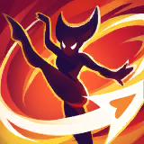

SKILL 01 • ULTIMATE
Theater of Pain
Peech strikes the nearest enemy three times, dealing Physical Area Damage with every hit while slightly pushing affected enemies backwards.
For every Chaos ally she starts the battle with, the range of both her basic attacks and Theater of Pain increases by 25%.
This means Peech becomes increasingly dangerous inside full Chaos compositions. More Chaos allies allow her to threaten a much larger portion of the enemy formation.
The repeated knockbacks also create opportunities for frontline heroes such as Cleaver and Kayla to attack multiple targets.
Her Weapon Artifact activates when she casts Theater of Pain, providing a team-wide Armor bonus.
SIGNATURE MECHANIC: Every Chaos ally present at the start of battle increases Peech's basic attack and Theater of Pain range by 25%.